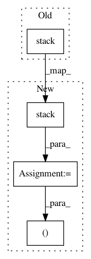

0c63b9dcd7ee3da39c74379a01d16e3a360d3506,niftynet/layer/resampler.py,ResamplerLayer,_resample_inv_dst_weighting,#ResamplerLayer#Any#Any#,178
Before Change
b_size = tf.reshape(
in_spatial_size, [len(in_spatial_size)] + [1] * (len(out_size) - 1))
// find floor and ceil coordinates
all_coords = tf.stack([
self.boundary_func(tf.floor(sample_coords), b_size),
self.boundary_func(tf.ceil(sample_coords), b_size)], axis=0)
// find N weights associated to each output point
all_coords_f = tf.to_float(all_coords)
diff = tf.stack(
After Change
b_size = tf.reshape(
in_spatial_size, [len(in_spatial_size)] + [1] * (len(out_size) - 1))
// find floor and ceil coordinates
all_coords_f = tf.to_float(tf.stack([
self.boundary_func(tf.floor(sample_coords), b_size),
self.boundary_func(tf.ceil(sample_coords), b_size)], axis=0))
// find N weights associated to each output point
diff = tf.stack(
[tf.squared_difference(sample_coords, all_coords_f[0]),
tf.squared_difference(sample_coords, all_coords_f[1])])
// gather_nd for both matrix, the same as:
// point_weights = tf.gather_nd(diff, weight_id)
// knots_id = tf.gather_nd(all_coords_f, weight_id)
n_val = tf.gather_nd(tf.stack([diff, all_coords_f], axis=-1), weight_id)
n_val = tf.unstack(n_val, axis=-1)
point_weights, knots_id = n_val[0], n_val[1]
point_weights = tf.reduce_sum(point_weights, axis=1)
// skip this as power = 2:
In pattern: SUPERPATTERN
Frequency: 3
Non-data size: 4
Instances
Project Name: NifTK/NiftyNet
Commit Name: 0c63b9dcd7ee3da39c74379a01d16e3a360d3506
Time: 2017-10-26
Author: wenqi.li@ucl.ac.uk
File Name: niftynet/layer/resampler.py
Class Name: ResamplerLayer
Method Name: _resample_inv_dst_weighting
Project Name: asappresearch/sru
Commit Name: ea78d1792a68a830a3f52c5674c3e879b3b82fc2
Time: 2019-09-18
Author: hp@asapp.com
File Name: sru/sru_functional.py
Class Name: SRU
Method Name: forward
Project Name: OpenNMT/OpenNMT-py
Commit Name: 5e8936c90646daea4a0483f3fc73f6e0aa4b1c9e
Time: 2017-09-20
Author: jingxil@foxmail.com
File Name: onmt/modules/SRU.py
Class Name: SRU
Method Name: forward